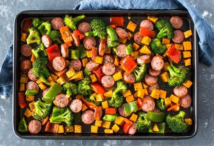

Italian Sausage Sheet Pan
- 2 large carrots
- 2 red potatoes
- 1 medium zucchini
- 2 bell peppers (any color)
- 16 oz smoked turkey polish sausage
- 2 T Italian seasoning
- 1/2 T garlic powder
- 1/8 tsp red pepper flakes
- 1/2 tsp onion powder
- 4 1/2 T olive oil
- salt and pepper to taste
- 1/3 cup shredded parmeasan cheese (optional)
- Preheat oven to 400°F.
- Line a large baking sheet with parchment paper or aluminum foil.
- Peel and thinly slice the carrots.
- Chop the red potatoes into small pieces.
- Halve the zucchini, then cut into thick slices.
- Clean and chop bell pepper into medium-size pieces.
- Slice the sausage into coins, then chop the coins into halves.
- Combine the veggies and sausage in a large bowl.
- Drizzle the olive oil over the veggie/sausage mixture, then toss in the spices. Mix until everything is well coated.
- Pour mixture onto prepared baking sheet and bake for 15 minutes. Remove pan from oven, stir, and bake an additional 10-20 minutes.
- Remove fom Oven, sprinkle parmesan on top (optional) and serve plain or with rice or quinoa.
Recipe from: Tiffany Stewart
You can subsitute other veggies such as broccoli into here, or add more or less of your favorite veggies!